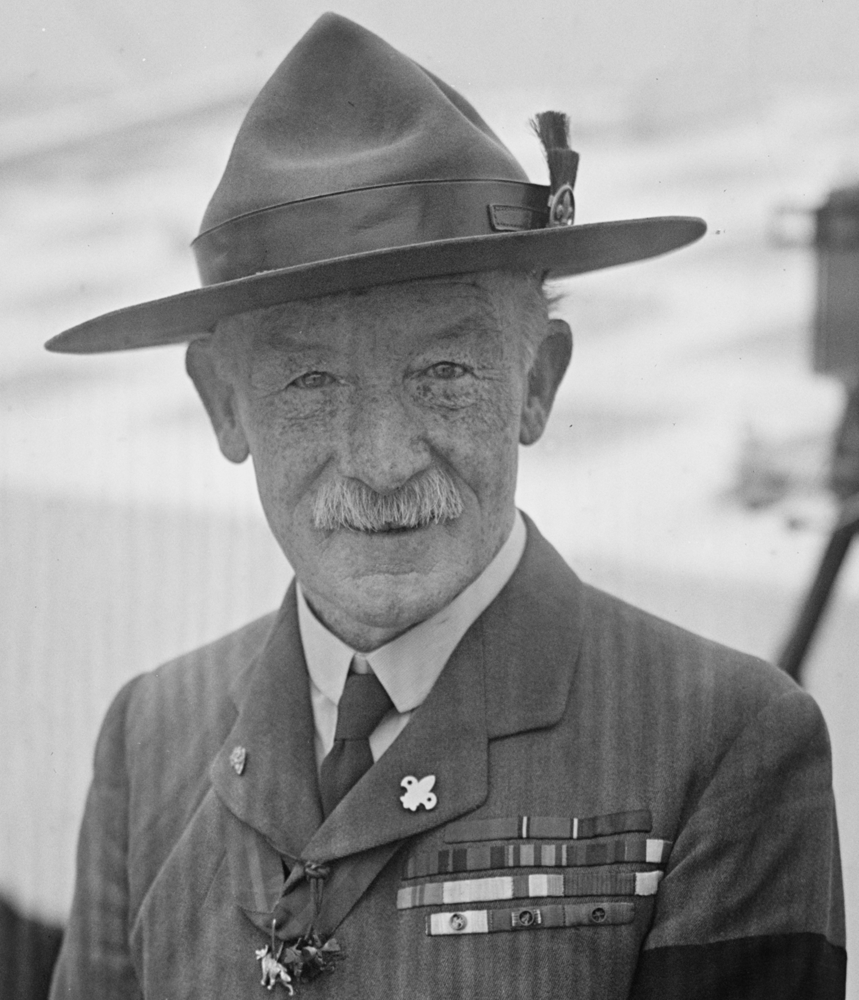
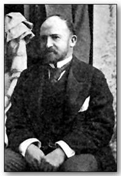
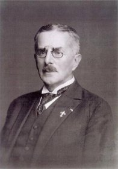

Historie vodního skautingu
A to nejen v Česku
Začátek vodního dobrodružství
Je všeobecně známo, že Robert Baden-Powell nabídl britským chlapcům hru, která se brzy rozrostla v celosvětové hnutí – skauting. Když bylo Robertovi patnáct let, plavil se společně se svými bratry Waringtonem a Georgem na rozkládací kánoi po řekách Temže, Severn a Wye. Jednalo se o vodní puťák, na který B-P vzpomínal s láskou v srdci, ale také (a to především) se zde naučil, jak si pomoci v obtížích a zjistil, že vodáctví může velmi silně formovat charakter člověka.
Tato vzpomínka vedla zakladatele skautingu k využití člunu k výcviku na prvním skautském táboře na ostrově Brownsea. Na vodácký program myslel i při psaní knihy Skauting pro chlapce (Scouting for Boys), když požádal o spolupráci svého staršího bratra Waringtona, zkušeného jachtaře a v té době významného diplomata ve službách admirality. Vedle oddílů pěších skautů tak začaly spontánně vznikat i oddíly námořních skautů. Přičemž první vodáckou příručku Sea Scouting and Seamanship for Boys napsal právě Warington Baden-Powell v roce 1912.
 Robert Baden-Powell (vpravo) a jeho bratr Warington Baden-Powell (vlevo)
Hurá k nám!
Josef Rössler-Ořovský, zakladatel českého vodního skautingu, se v roce 1912 seznámil na olympijských hrách se švédskými vodními skauty a začal u nás nadšeně vodní skauting propagovat. Vodácký výcvik zavedl nejprve mezi dorostenci v Českém Yacht Klubu a Svazu kanoistů Republiky československé. Později se mu začala věnovat i instruktorská družina Bobrů z 2. pražského oddílu. Bobři se stali první družinou, jež zařadila systematický vodácký výcvik do programu skautské činnosti.
Josef Rössler-Ořovský
Skautské hnutí, ať už se jednalo o vodní či suchozemské oddíly, nemělo činnost v průběhu minulých let jednoduchou. V několika cyklech docházelo k narůstání členů a nabývání organizace na důležitosti a následně k jejímu úplnému zakázání.
V roce 1919 vodní skauti v čele s Josefem Rösslerem-Ořovským vytvořili Hlavní stan vodních skautů, později Hlavní kapitanát vodních skautů. Koncem 30. let došlo k významějšímu rozvoji vodního skautingu. Vznikaly nové oddíly nejen v Praze, ale také jinde v republice. Poté, co byly běhěm druhé světové války české země okupovány nacistickým Německem, došlo roku 1940 k prvnímu zákazu Junáka a tím také vodních skautů.
Roku 1945 došlo k obnově Junáka a byl opět zformován Hlavní stan vodních skautů, který začal vydávat první pravidelný časopis pro vodní skauty – týdeník Pošta HKVS, dnešní Kapitánská pošta, ze které lze čerpat například inspiraci pro vodácký program. HKVS také vydává doplněk skautských časopisů Skaut a Světýlko – přílohu Mod/kré stránky. Roku 1946 se uskutečnila první lesní škola a první sraz vodních skautů. Obojí se koná dodnes, přičemž srazy jsou nyní ve formě víkendových vzdělávacích kurzů a jezdí na ně většina vodáckých vedoucích a roverů od 15 let. Srazy jsou vhodné i pro pěší skauty.